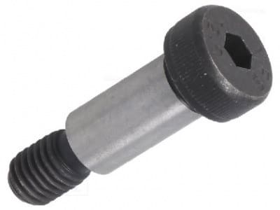

ISO 7379 Винт с утолщенным стержнем
Стандарт
DIN 84
ISO
ISO 7379
Цена от
38,12 ₽
Размерный ряд
Класс прочности 12.9
Винты » ISO 7379 Винты для отверстий из-под развертки
Варианты и размеры (15)
| Наименование | Размер | Длина, мм | Материал | Покрытие | Цена |
|---|---|---|---|---|---|
| ISO 7379 Винт с утолщенным стержнем L=100мм | 100 | 74,30 ₽ | |||
| ISO 7379 Винт с утолщенным стержнем L=10мм | 10 | 31,40 ₽ | |||
| ISO 7379 Винт с утолщенным стержнем L=120мм | 120 | 83,90 ₽ | |||
| ISO 7379 Винт с утолщенным стержнем L=12мм | 12 | 32,40 ₽ | |||
| ISO 7379 Винт с утолщенным стержнем L=16мм | 16 | 34,30 ₽ | |||
| ISO 7379 Винт с утолщенным стержнем L=20мм | 20 | 36,20 ₽ | |||
| ISO 7379 Винт с утолщенным стержнем L=25мм | 25 | 38,60 ₽ | |||
| ISO 7379 Винт с утолщенным стержнем L=30мм | 30 | 41,00 ₽ | |||
| ISO 7379 Винт с утолщенным стержнем L=40мм | 40 | 45,70 ₽ | |||
| ISO 7379 Винт с утолщенным стержнем L=50мм | 50 | 50,50 ₽ | |||
| ISO 7379 Винт с утолщенным стержнем L=60мм | 60 | 55,30 ₽ | |||
| ISO 7379 Винт с утолщенным стержнем L=70мм | 70 | 60,00 ₽ | |||
| ISO 7379 Винт с утолщенным стержнем L=80мм | 80 | 64,80 ₽ | |||
| ISO 7379 Винт с утолщенным стержнем L=90мм | 90 | 69,60 ₽ | |||
| ISO 7379 Винт с утолщенным стержнем M5 | M5 | 41,90 ₽ |